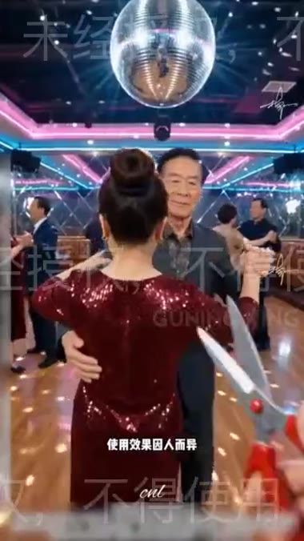
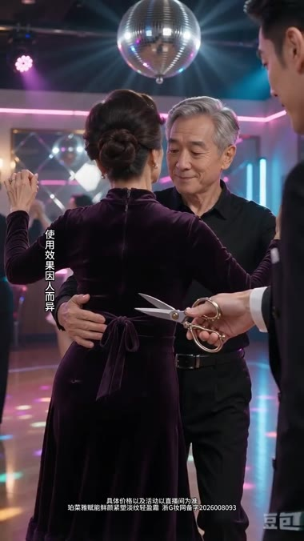
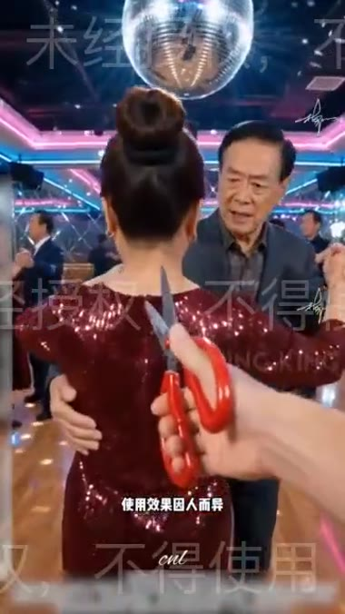
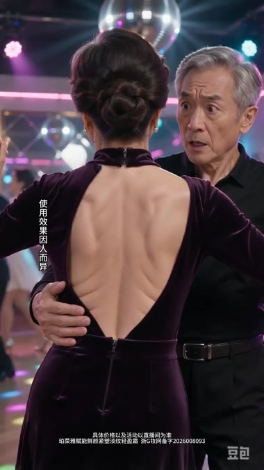
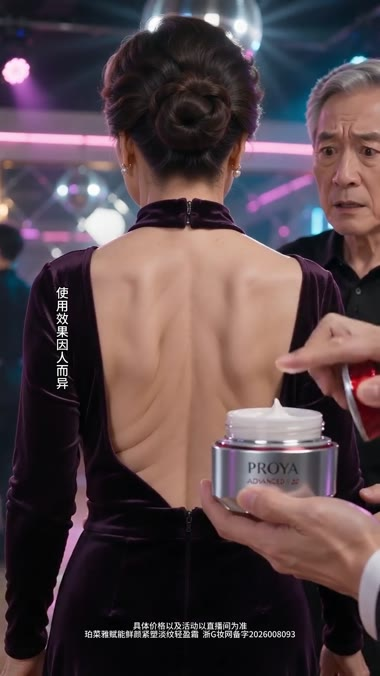
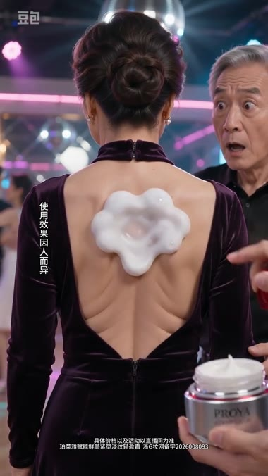

复刻片完整复现了原片的场景符号（舞厅、迪斯科球、剪刀、熟龄男女、露背裙、起泡演示），但丢失了原片的视线调度——男模视点由「背部涂抹位置」横向偏移为「女伴面部」，反应镜头失去动作指向物，叙事从「功效可见化」退化为「人物对视」。
| 时间 | 画面（原片 / 复刻） | 差异判断 |
|---|---|---|
| 0.5s |   原片复刻 |
场景还原度高：迪斯科球、舞厅灯带、露背裙、熟龄男主均到位。差异在色彩与服装——原片酒红亮片裙，复刻改为紫色丝绒裙，服装材质偏「高级感」，稀释了原片略带市井的土味反差。 |
| 2.0s |   原片复刻 |
原片此处红色剪刀刚入画、尚未贴近衣料；复刻片剪刀已在画面右侧就位。两者都完成了「剪刀」符号前置，这一项复刻合格。 |
| 4.0s |  原片复刻 |
原片产品为红色小罐，手持位置贴近画面中心、与背部同一焦平面；复刻片为珀莱雅银罐，位置偏画面下方，且另一只手在右侧持红色物件，画面出现两个产品相关要素争抢焦点。 |
| 6.0s |  原片复刻 |
核心偏离点。原片男模低头、视线垂直落在手指涂抹处，瞳孔朝下；复刻片男模平视、瞳孔横向朝左锁定女伴侧脸。同一句「震惊」，原片是「看到产品起效」，复刻变成「看着搭档」。 同期泡沫形态也已分叉：原片为同心圆扩散，复刻为对称云朵／花瓣状贴片。 |
| 9.0s | 原片复刻 |
原片泡沫持续膨胀至覆盖整个后背，边缘毛糙破碎、有明显「沸腾」感，仍保持后背机位；复刻片此处已切正面、女主转身，泡沫只剩肩头一小块。展示面消失，效果信息被腰斩。 |
h2_dance_wrinkle.mp4（360×640 / 15s）与复刻片（1080×1920 / 43s，豆包 AI 生成）。